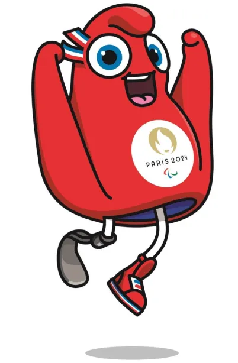
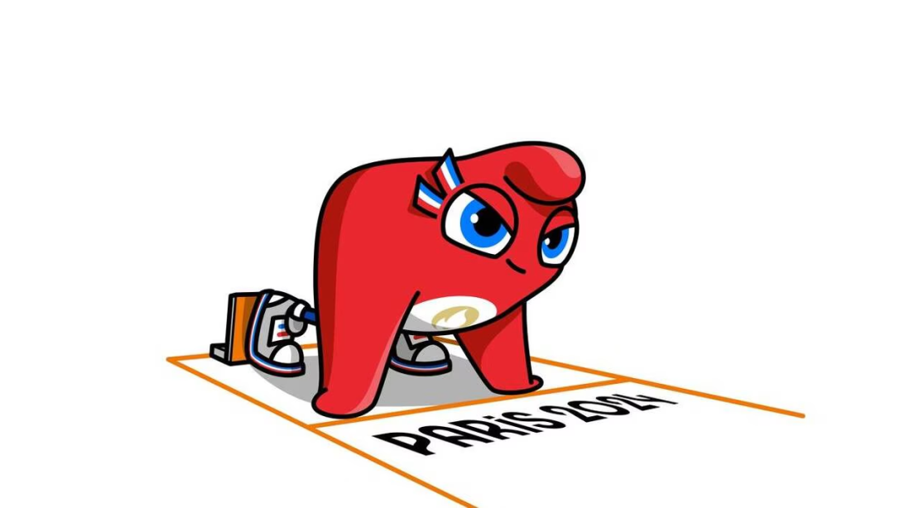
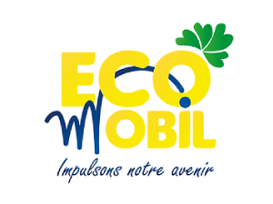
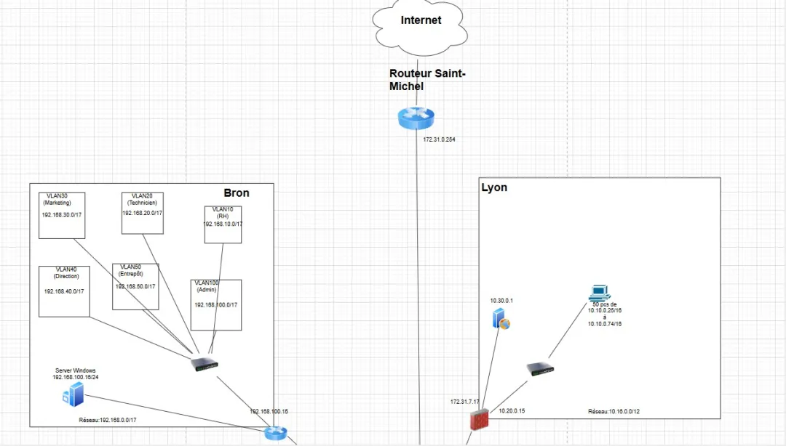
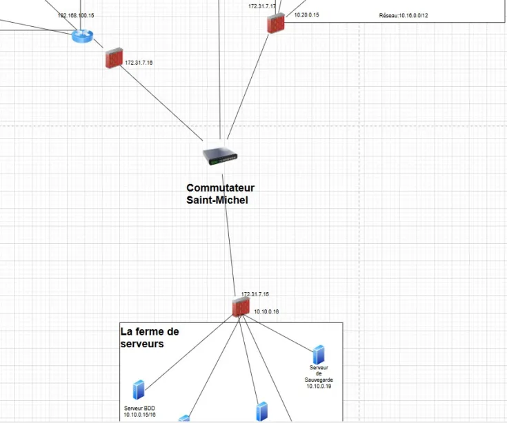
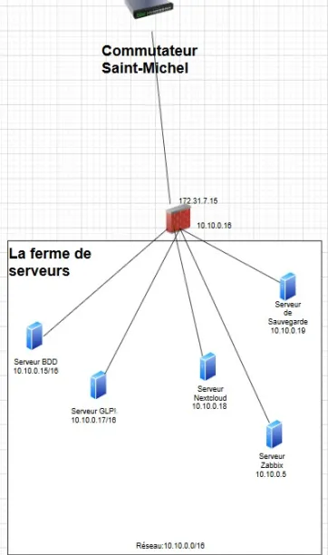

💻 Expériences en stage
Stage à l'Univeristé Savoie Mont-Blanc (Annecy)
05/01/2026-13/02/2026 : Univ. Savoie Mont-Blanc (Annecy) Sce Infrastructure Informatique
stage 2ème année BTS (6 sem.)26/05/2025-27/06/2025 : Univ. Savoie Mont-Blanc (Annecy)
Sce Infrastructure Informatique stage 1ème année BTS (6 sem.)
💼 Expériences en entreprise
Travail à l'Univeristé Savoie Mont-Blanc (Annecy)
11/08/2025-29/08/2025 : Univ. Savoie Mont-Blanc (Annecy)
20/10/2025-31/10/2025 : Univ. Savoie Mont-Blanc (Annecy)
Technicienne de maintenance informatique (salariée)
📖Expériences en cours formation
Premier projet sur les jeux olympiques de Pierre de Coubertin
Réalisation d'un site internet pour le Jeux olympique
de Paris 2024. Réalisation d'un support LAMB sur machines
virtuelles

Projet pour musée projet fait avec les deux filiaires (SLAM/SISR)
Réalisation d'une infrastructure pour un musée.
Pour répondre aux besoins spécifique:
- Mise en place d'un serveur AD
- Création des utilisateurs,GPO,Droits,Groupes
- Création de vlan sur l'infrastructure du projet

Projet IA
Réalisation d'une application pour reconnaître
les animaux et raconter des histoires aux enfants:
- Entrainement de l'IA avec plusieurs images
Entraîner pendant 1 semaine sur quelques animaux - Réalisation du site de présentation du challenge IA
et du projet - Réalisation de l'affiche
Projet Ecomobil
Réalisation d'une infrastrucutre
conforme aux besoins de l'entreprise
Ecomobil.Sécurisation de l'infrastructure
et réalisation de deux projet choisit et
approfondis.




- Segmentation de réseau
- Mise en place d'un serveur GLPI
- Serveur Zabbix
- Serveur de sauvegarde
- Configuration d'un point d'accès
- Serveur AD (DHCP, AD, Droits, ...)
- Sécurisation des périphériques intermédiaires
- Serveur MySQL
- Mise en place d'un serveur Graylog (gestion des logs)